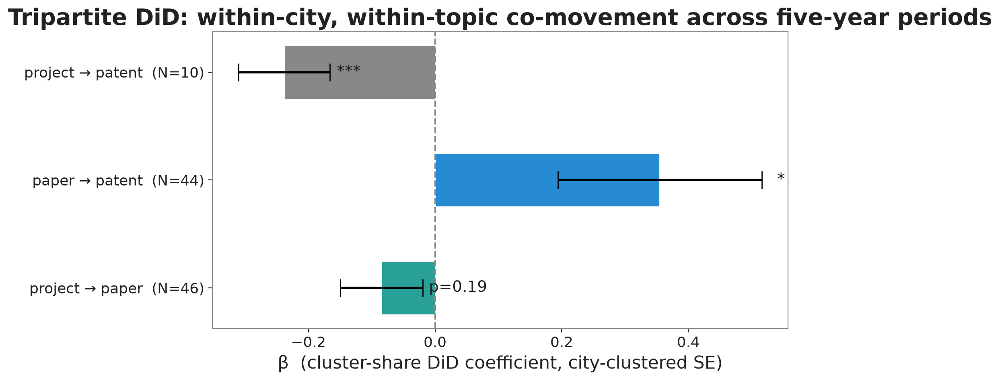
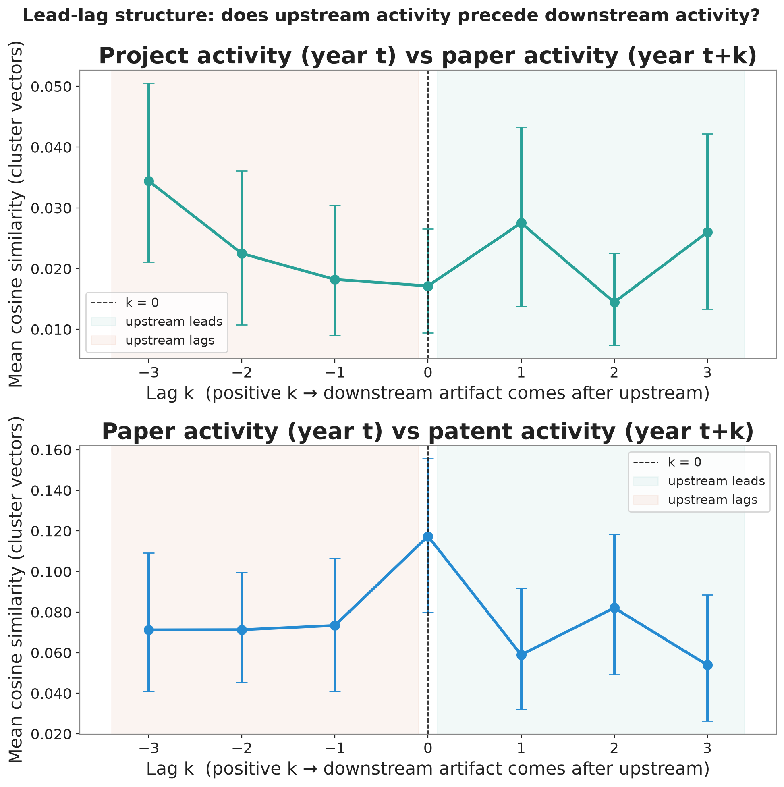
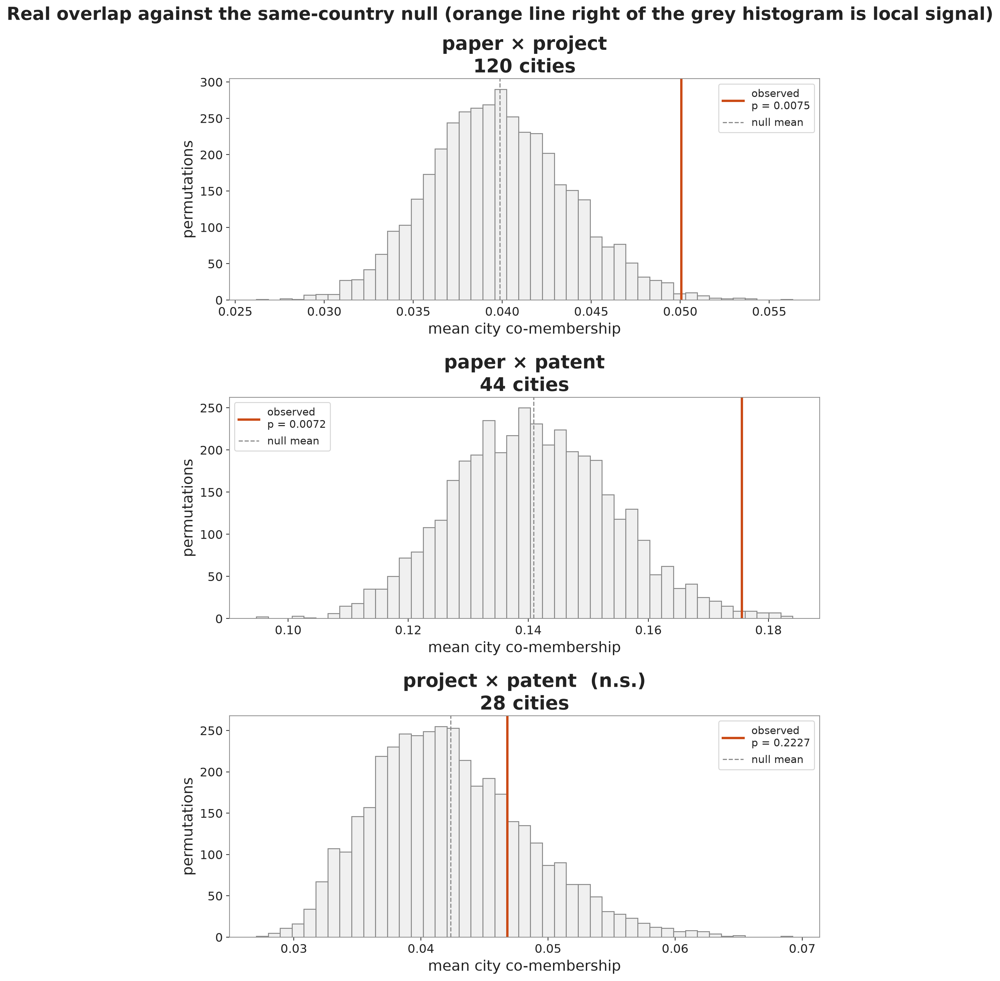
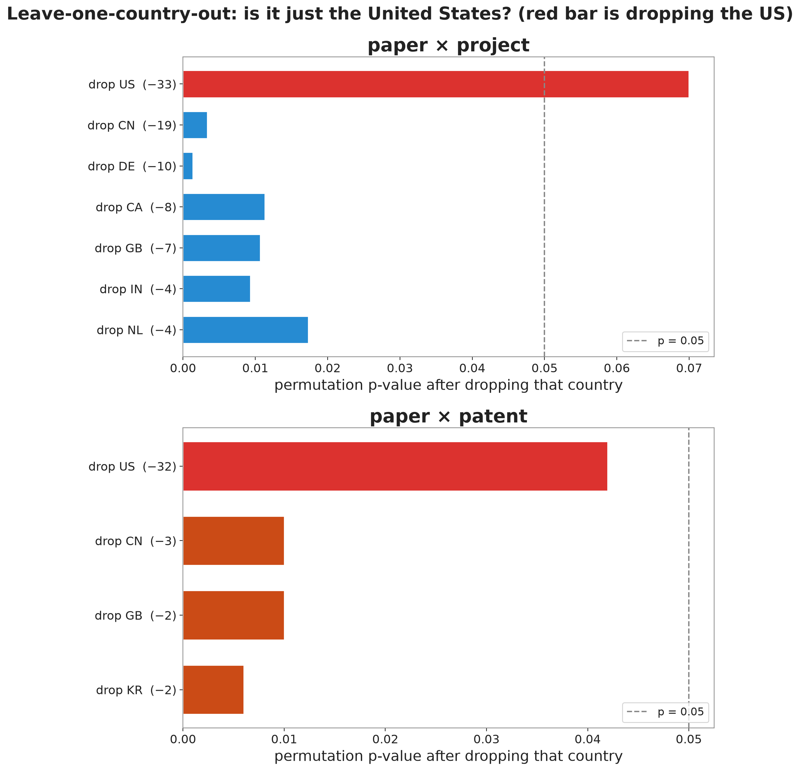
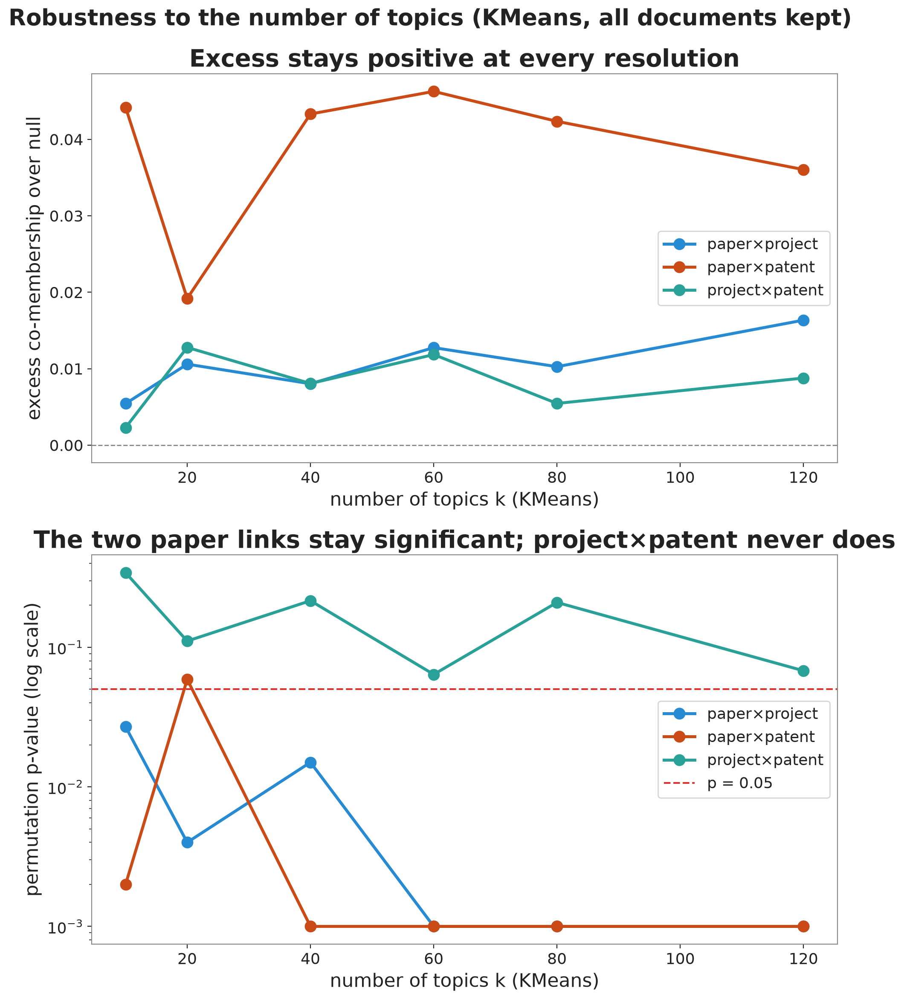
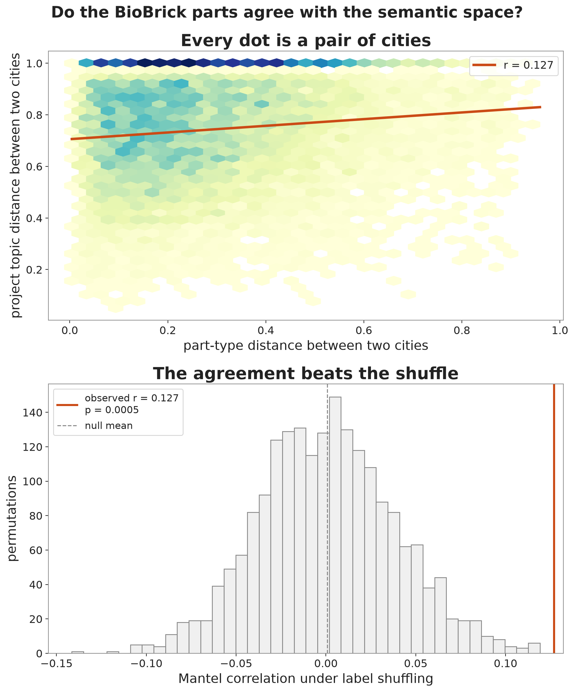

Mapping Innovation in Synthetic Biology
Do a city’s students, academics, and inventors work on the same things?
| Source | Records |
|---|---|
| iGEM registry + wikis | 4,606 projects |
| OpenAlex (keyword) | 10,319 papers |
| Oldham USPTO set | 2,901 patents |
| iGEM parts registry | 89,060 BioBricks |
17,826 artifacts to be textually compared
Averaging a city’s projects into one vector, its papers into another, and taking cosine distance between the two vectors
90% of projects are semantically closer to their own city’s average paper than to a random city
| Relatedness Regressed on Number of Artifacts | |
|---|---|
| log(papers) | 0.0164*** |
| (0.0015) | |
| log(projects) | 0.0190*** |
| (0.0018) | |
| N cities | 387 |
| R² | 0.63 |
Give each city a profile over the 80 topics, scaled to unit length. The overlap of two artifact types is the cosine of their profiles:
overlap = Σ over topics of (paper share) × (project share)
Large when the two types weight the same topics, small when they scatter
| link | cities | excess | p | same-topic lift | beats null? |
|---|---|---|---|---|---|
| paper × project | 120 | +0.0102 | 0.0065 | 1.30× | Y |
| paper × patent | 44 | +0.0347 | 0.0065 | 1.27× | Y |
| project × patent | 28 | +0.0043 | 0.227 | 0.99× | N |
A city’s papers share topics with its projects and patents. The project-to-patent link is not significant when country and size are held fixed fixed.
The science a city publishes is the common ground between student and Commercial Research
in_known = 1[city c has a paper in cluster k before year y]
| value | |
|---|---|
| projects tested | 2,742 |
| own-city entry rate | 7.8% |
| baseline (random city) | 1.4% |
| mean δ (own − baseline) | +0.063 |
| t-test (H₀: δ = 0) | t = 12.6 |
| p-value | < 0.001 |
For each non-noise project in cluster k, city c, year y, ask whether the city had already published in that cluster. An iGEM Project is
≈ 5.5× more likely to enter a cluster its city already publishes in
Head-to-head within the 2009–2018 overlap window, counting only city-topics where both types appear:
| in the same city-topic | who’s first |
|---|---|
| project vs paper | project — 76% · p < 0.001 |
| project vs patent | project — 75% · n = 16 (ns) |
| paper vs patent | roughly tied |
76% of the time a city enters a cluster with an iGEM project before a paper
Real, size-independent local relatedness exists between a city’s iGEM projects and its papers, and its papers and its patents
So what? Funding student science and open tools helps. iGEM projects can be used as a useful indicator of where a city’s research might be moving next
Website — zer0juice.github.io/synbiomap
Code & data — github.com/Zer0Juice/synbiomap
Manuscript & this deck (PDF) — on the Paper page
Advised by Frank Neffke (CSH) and Claudia Doblinger (TU Munich)

Difference-in-differences within a city and topic, after removing each city’s baseline and each topic’s global trend.
This is co-movement in time, not proof of cause.

In the two-type sample the project–paper similarity peaks when papers come about three years after projects. With all three types the profile flattens toward a null, so treat the ordering as suggestive rather than settled.

Each grey histogram is the range of overlaps the within-country shuffle produces; the orange line is the real value. The two paper links sit out in the tail; project × patent sits inside the noise.

Re-run the within-country permutation test after removing each large country in turn. Each bar is the link’s p-value once that country is gone; the dashed line is p = 0.05.
The red bar is dropping the US.

From 10 to 120 topics, paper × project and paper × patent stay significant; project × patent never crosses. The result is not an accident of one clustering choice.

Is this only an artifact of how the model reads text? Check it against something the model never saw.
Two windows, one of words and one of DNA parts, see the same shape.
Uppsala 2009’s Booze Bugs engineered cyanobacteria to make alcohol from sunlight and registered the parts. A 2014 paper cites the team’s own BioBrick. One city, competition to publication, in a single traceable thread.
Patents, Papers, Parts & Planet